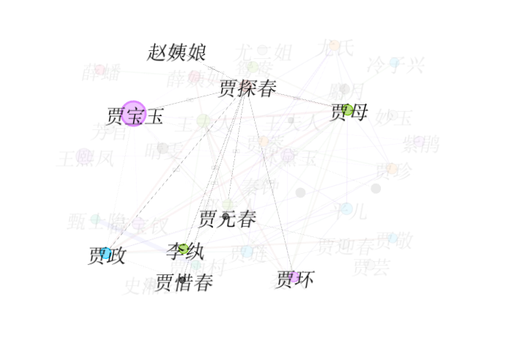

贾探春，曹雪芹所著《红楼梦》中人物，金陵十二钗之一，荣国府贾政与奴婢出身的妾室赵姨娘所生的女儿，贾宝玉同父异母的妹妹，贾府通称三姑娘，宝玉及三春均在贾母身边抚养长大，所受教育极好，与嫡姐元春无异。她精明能干，能决断，有“玫瑰花”之诨名，连凤姐都忌惮她几分，抄检大观园时她扇了王善保家的一巴掌；她工诗善书，趣味高雅，曾发起建立海棠诗社，是大观园中的一位大才女；她关心家国大事，有经世致用之才，曾奉王夫人之命代凤姐理家，并主持大观园改革。
贾探春虽受良好教育，因系赵姨娘所生，虽在凤姐病假期间暂执权杖发动大观园改革，但为时已晚，难以挽回贾府颓势。抄检大观园时，她万分悲愤地发表“百足之虫论”。
